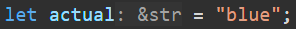
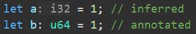
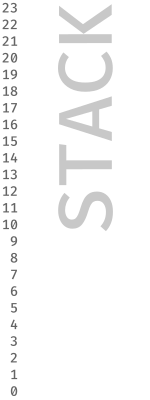

Memory
When you create a program, how does it remember things? In the last chapter, we created a variable and put our name inside it. Where was our name stored?
Jumping into memory already might seem unusual. A lot of programming tutorials in any language would like to get you writing code before you have to worry about such things. However, I think right off the bat we have a wonderful opportunity to talk about how memory works in Rust and, because memory is so important to how Rust works, I think this will simplify everything you learn going forward.
We’re going to make an extremely simple program and use that as the basis to explain how Rust remembers.
The Guessing Game
To learn about memory, we’ll make a simplified version of the guessing game from the official Rust book. Start by opening your terminal and navigating to where-ever your creating you projects like in the last chapter, then we’ll create a new project with:
cargo new guessing-game
Open the project in you editor and open the file src/main.rs. As before we’ll see the same “hello, world” program:
fn main() { println!("Hello, world!"); }
As we step through this tutorial, if you mouse over the code examples, you can see some buttons that will let you
- ⎘ Copy the example to your clipboard
- ⏵ Run the example via rust playground (where possible)
- 👁 Show any code I’ve opted to hide for clarity, try this on the next block
Let’s quickly change our hello world message to something that welcomes us to the game.
fn main() { println!("Welcome to the guessing game!"); }
And ask the user to do something:
fn main() { println!("Welcome to the guessing game!"); println!("I have chosen a color red, green or blue, can you guess which?"); }
Because we’ve used a second println! this will appear on a new line. The new line actually comes at the end of the
println! so if you want to make both sentences appear on the same line, you can change the first one with print!
(no “ln”). Try it out and see what else you might need to change!
Let’s pick a color that the user has to guess. To begin with we’ll just hard code one value, later we’ll make it choose randomly. I’m going to choose blue, but you can choose whatever you like:
fn main() { let actual = "blue"; println!("Welcome to the guessing game!"); println!("I have chosen a color red, green or blue, can you guess which?"); }
Before we move on, I want to call out the “type” of the data we’ve just created.
We’re going to talk about types in the next chapter, but I want to quickly point some things out. The type of data describes a number of things but mainly, how that data is represented in memory and how it can be used. For example, is the data a string (like “blue”), or a number, or a boolean that represent true or false.
If you’re using an editor that shows type information you might see that next to actual its written something like
: &str, eg:

This means that the variable actual contains a “reference” (represented by the &) to a “string slice” (represented
by str). We’ll talk about why the variable only contains a reference and not the data itself later. You could, if you
like, manually write this let actual: &str = "blue" yourself, however, it’s generally better to let Rust infer the
type, and only write it yourself if either Rust is unable to decide (because it could be multiple things) or if you want
to use something different.
This is why it’s a good idea to make sure whatever you’re writing Rust in shows you what
Rust has decided a type is. For example, the default integer type in Rust is i32 (don’t worry, we’ll explain this
later), however your program might have specific requirements that make it sensible to annotate the type so that Rust
uses a u64 instead. (Yes, Rust has many different types for representing numbers, we’ll worry about that next time 😊)

Anyway, back to the program: let’s output the color. This will end up being the last thing in the program, but we can use this to check everything is working ok:
fn main() { let actual = "blue"; println!("Welcome to the guessing game!"); println!("I have chosen a color red, green or blue?"); println!("The color I chose was {actual}"); }
We can run this now and see that the color to be guessed was entered.
Great… but not much of a game is it.
In order to get some user input, we need to read from the terminal. Before we tell the user what the actual color was lets ask them to guess
fn main() {
let actual = "blue";
println!("Welcome to the guessing game!");
println!("I have chosen a color red, green or blue");
println!("Enter your guess: red, green or blue");
println!("The color I chose was {actual}");
}We’re then going to read a line of input from the user. When the program runs in the terminal, we can ask the user to
type things, regardless of whether you are on Windows, Mac or Linux, this input is passed into the program through a
stream of data called stdin (standard in).
Rust comes with a “standard library” (the name is unrelated to the stream) that we can access as a module called std.
I pronounce this S T D, but you may also here people call it “stud”. Modules in Rust are a way of grouping up other bits
of code such as functions, data types and even other modules. We’ll talk about them more in a future lesson. Inside of
this is another module called io that deals with input and output. If we weren’t using the println! macro, this is
where we’d have to come to write things out to the terminal too, via a stream called stdout (standard out).
For completion’s sake I should mention there is one more stream called
stderr(standard error). This is also an output stream that we can use to separate “good” output that is relevant to the normal use of the program to really any other kind of output, whether that be errors or just information not directly relevant to the main output.For example, on Mac and Linux, if you use
cargo run 2> /dev/nullto run your program, you’ll see that you lose the messages about your program being compiled because we redirected stderr (stream 2) to the void of/dev/null, and Cargo sensibly decided that it’s output is not relevant to your programs normal outputOn Windows the same can be achieved in cmd using
cargo run 2> nul(note, only one l in nul), or in powershell withcargo run 2> $null(two l’s this time and a dollar, no idea why it’s different)
stderris really useful for things like logging, and we’ll talk more about streams in the future, but if you want to quickly write something to this stream you can useeprintln!andeprint!the same way we useprintln!andprint!
So, we get stdin using std::io::stdin(), this is a function call (we’ll talk about functions in a couple of chapters),
that returns something called a “handle” that we can use for temporary access to the input stream.
The double colons just tell Rust that you’re looking for something inside a module. We’ll cover modules in detail later, including how, why and when to make your own, as well as better ways to access them, but since we only need to write this line once, this is the easiest way to do it.
We could store the result of stdin() in a variable, however, we only use this once, and then we’re done with it, so,
off the back of the function call, we can call immediately call .lines(). This is a method (a special type of function
that belongs specifically to some other thing, in this case it belongs to the handle for stdin). In the example below
I’ve put this on a new line for legibility, but you don’t need to do this.
.lines() returns an iterator, allowing us to iterate (step through) each line one at a time. We get the next line by
calling .next() on the iterator.
If we add this all in our code looks like this
fn main() {
let actual = "blue";
println!("Welcome to the guessing game!");
println!("I have chosen a color red, green or blue");
println!("Enter your guess: red, green or blue");
let input = std::io::stdin()
.lines()
.next()
.expect("No input was read")
.expect("There was an error when reading the input");
println!("Your guess was {input}");
println!("The color I chose was {actual}");
}Wait wait wait, what are those expects about?!
expect() is, I would say, the second-worst way you could handle something going wrong in your program. This is not
“idiomatic” and you absolutely should not use this in anything except the most throw away software as it will
immediately cause the program to stop and spew a lot of information at the user. In the future we’ll talk about things
going wrong and how to better handle them, however, as this program is just for you, I think you’ll cope for now. 😊
That doesn’t explain what these lines are doing, or why there are two of them though. The reason for this is that there
are two possible ways .lines() might not work.
The first expect then:
.expect("No input was read")When we call .next() on any iterator, there either is something next or there isn’t. In some languages this
might return either the data you expect, or a null value. For example, it might return "red" or null. “red” is a
string but null is not, what happens if you pass this to a function that expects a string? This means you must either
manually check the thing returned was null, or don’t check, and risk your program breaking at some other point.
Obviously many people think this ambiguity is bad, including Tony Hoare, arguably the “inventor” of this behavior, who
has called it his “billion-dollar mistake”.
Rust does not allow you to use types like this interchangeably, i.e. data can not be a string or null as these types are
not compatible. In Rust, we use a kind of container type to get around this called Option. Importantly, when a
function returns an Option type you, the programmer, must check to see if it contains something, and then extract the
thing if it’s there. There are a number of ways to do this and .expect is one of the worst ways to do this (we’ll talk
about better ways in the future), as it will attempt to extract the data if its there, or stop the program abruptly with
the provided error message if it’s not.
For the time being we’re going to just say we can’t deal with it not being there, we don’t want to continue running the
program, and we want the program to stop. We use .expect("message") to say, if this is nothing, we are giving up,
stop the program and print our message (plus a few other useful bits) to the stderr (see above). You can see why this
behaviour is typically undesirable but that we can allow it for this example, at least until we learn how to deal with
Option properly.
The second expect is a bit different:
.expect("There was an error when reading the input");If the Option we got from .next() contains something instead of nothing, it still doesn’t necessarily mean we read
the users input correctly, reading data from stdin is itself fallible.
Fallibility, the nature that something may go wrong, in programming is another thing we’ve traditionally handled very badly. A common way to deal with this in other languages is to stop executing and “throw” an error. The problem with throwing errors is that it breaks the flow of execution, the next thing to get executed is not obvious, it’s going to be wherever the error is “caught”… if it’s “caught”. Sometimes you may not even realise that some code you’ve written could throw an error because you’ve called someone else’s code, and they didn’t make it obvious that their code could fail.
Rust does away with this with another type called Result. If your function can fail, it must return a Result type.
Like with Option, Result is its own type that contains either the data we wanted, or an error.
Again, the idiomatic way to handle this depends on what you’re trying to do; is the error recoverable (could the program
continue despite the error), and how do we want to report the error back to the user. Using expect will, again, cause
the program to immediately stop with the error message and other bits sent to stderr, and again, you can see why this
is typically extremely undesirable.
But anyway, we now have a working program, there is an actual color, the user guesses a color, and we print both to the screen.
Memory
You might have spotted that actual and input have different types (don’t worry if you didn’t, when you added all the
code associated with getting the input, it added a lot of types, so you could easily miss it).
Importantly though, actual is a &str, which is a reference to a string slice. However, input is a String.
What’s the difference?
The Stack
To understand this, we have to talk a little bit about how our program runs.
In Rust (and many languages in fact), programs are made up of functions; small, independent bits of code. In our
program we only have one function for now, which is main, but this still applies. When we run our program, the
operating system assigns some memory for the program to run in, called “the stack”.
Aside: Some people like to think about the stack going from top to bottom because the memory address go down like lines on a page (or lines of code), but most people talk about it going from bottom to top because we talk about putting things on the stack which is easier to visualise. It’s an abstraction, so it doesn’t really matter. I’m going to explain it from bottom to top as I think this makes visualising the manipulation of the stack easier.
Each time we run a function we create a new block of memory on the stack that’s the exact size of everything that function needs to remember. So, for example, if our function has three numbers in it, then our new block on the stack will be exactly the size of required to store those three numbers.

In the example above we’re representing the memory of the stack. When the program is initialized the operating system
assigns some memory for the stack, then, all the memory required to store all the variables in main (which it in this
example is 4 addresses) is blocked off. Then, as main runs, it calls another function, f1 which requires two
more addresses. f1 then calls another function which requires 3 addresses worth of memory, f2. Once f2 has
finished, it is removed from the stack, then f1 finishes, and it too is removed from the stack. Finally main comes
to an end and our program closes and all memory is freed.
You can see that the amount of memory a function needs is very important, but… how long is a piece of string?
Our three colors, “red”, “blue” and “green” are 3 characters, 4 characters and 5 characters respectively. How much memory should we assign on the stack? What about the users input? Is that 3 characters, 4 characters or the complete works of Shakespeare? How much memory each function will require is decided at build time, and we don’t know what the user is going to write until later.
Anything that lives inside a variable goes on the stack, and anything on the stack must be of known size when the program is compiled. In Rust, we have a specific name for this “Sized”. Things like numbers, characters, booleans and even tuples are Sized, but a string of characters is not, it is “Unsized”.
So where does our data live if not inside the variables?
Returning to the top, you’ll remember that our actual variable has the type &str which is a reference (&) to a
string slice str. A reference is something that points to where some actual data is, this is very handy when you want
to tell something about some data without having to give it the specific data. When you manually write a string between
double quotes "like this", it’s called a “string literal”. This applies to our variable as well as every time we’ve
used in a println!. A “string slice” can be any part of a string stored somewhere else, so it can be characters 0 to 3
(b, l, u, e) of our string literal that’s stored in the executable.
The Heap
Our input, however, is very different, we don’t know what’s going to be in here at all at compile time. In order to
store the data that the user gives us, we still need to put it in memory somewhere, but it can’t live on the stack.
Instead, we use another kind of memory called “the Heap”. At any point while the program is running, we can ask the
operating system to allow us to access some amount of memory. We still need to know how much memory we need, but now we
only need to know how much memory at runtime. This memory comes from the Heap. In the heap, we can store “Unsized” data
(as well as Sized which can be useful under certain circumstances) and, then because everything about the location of
that data is Sized, we can store it in a variable on the stack. String does not contain the data, but does know where
the data is.
Some other important differences between the Stack and the Heap. The Stack is more limited in size, you should try to avoid storing large amounts of data here (even if the size is known). Creating memory on the Heap takes longer than creating it on the Stack, this is because you have to communicate your requirements to the operating system and wait for it to get back to you with that allocation. This doesn’t take too long, but one thing to watch out for is repeatedly increasing the amount you need. If you create a string of a certain size, then ask for more memory (eg, by appending more data to it), then in the background Rust will ask the operating system for a new, larger block of memory, then it has to copy the old data to it, before adding anything else on to the end.
This is all great, but why is one of them &str and one of them String if both of them are just references to data
stored elsewhere? This actually comes down to “ownership”. We’ll go into ownership in more detail later in a later
chapter but at a very high level a reference to a string slice does not own the string data. Ownership allows full
control over the data, and most importantly, it tells the program when to clean up the data. When an &str is no longer
needed, the reference is cleaned up, but the data still exists. When a String is no longer needed, not only is the
reference cleaned up, but memory is returned to the operating systems control, freeing it up for something else to use.
It’s important to note though that &str and String are different types. The data they reference is formatted the
same way in memory, but they are not interchangeable. Later, when we discuss functions, you’ll see that if a function
requires a String you can not pass it a &str and vice versa. You can, however, trivially go from one to another.
fn main() { let name = "Daniel"; // This is a &str pointing at a sequence of bytes in the executable let name_on_heap = String::from(name); // This requests memory from the operating system then copies "Daniel" into it let name_ref = name_on_heap.as_str(); // This is a &str pointing to a sequence of bytes on the heap }
That said, they can be compared to each other (this actually goes for any data type in Rust so long as someone has told
Rust how to do the comparison, which for &str and String, someone has).
Let’s return to our program one last time. Below I’ve written out the full program and added an if/else statement.
if/else is a form of control flow. We put an expression inside the “if” that evaluates to either true or false, in
this case we’re asking if input is equal to actual. If it is, then the execution continues inside the if block
(the bit between the curly brackets), if it’s not true, then instead execution continues inside the else block.
fn main() {
let actual = "blue";
println!("Welcome to the guessing game!");
println!("I have chosen a color red, green or blue");
println!("Enter your guess: red, green or blue");
let input = std::io::stdin()
.lines()
.next()
.expect("No input was read")
.expect("There was an error when reading the input");
println!("Your guess was {input}");
println!("The color I chose was {actual}");
if input == actual {
println!("you win!");
} else {
println!("you lose!");
}
}To Review:
Today we learned specifically about the Stack and Heap:
-
The Stack is where variables live, data must be of known size at compile time (Sized), but access is very fast.
-
The Heap is where we can store things regardless of whether we know their size at compile time (Sized and Unsized). We can store large amounts of data here but getting access to this memory initially is a tiny be slower.
-
You can reference data with
&if you don’t want ownership of the data, but you do want to access it.
We also learned a bit about Option and Result which we will go into more in the next chapter, and future chapters
too.
Finally, we learned that we can control the flow of execution with if, however, this isn’t the only way we can effect
the flow, and we’ll talk more about this in a couple of chapters.
Next time we’re going to look more at data types; what the basic types are, how we create new types, and how we can merge types together.
Bonus
You don’t need to do this but if you want to make your actual value random(ish) and turn this into a proper game,
then you could do it like this:
fn main() {
let colors = ["red", "green", "blue"];
let time = std::time::UNIX_EPOCH
.elapsed()
.expect("Call the Doctor, time went backwards")
.as_millis() as usize; // We only need the least significant bits so this is safe
let actual = colors[time % colors.len()];
println!("Welcome to the guessing game!");
println!("I have chosen a color red, green or blue");
println!("Enter your guess: red, green or blue");
let input = std::io::stdin()
.lines()
.next()
.expect("No input was read")
.expect("There was an error when reading the input");
println!("Your guess was {input}");
println!("The color I chose was {actual}");
if input == actual {
println!("you win!");
} else {
println!("you lose!");
}
}First we create an array of string slices for each possible value. Arrays are of known size at build time, for example, this one contains three string slice references, therefore its size is 3x whatever the size of a reference is. This means it’s Sized, therefore does exist on the stack. We’ll talk more about dynamic (therefore Unsized) collections in the next chapter.
To fake randomness we’re going to take the time at the Unix Epoch (the 1st of January 1970) and find the Duration of
time that has elapsed since then. Asking how much time has passed since another point in time is fallible because you
might be asking about a time in the future, this means we have to deal with a Result. This shouldn’t ever actually
return an error, but even when you’re absolutely sure, there’s no harm leaving a little message in the .expect() for
anyone else who happens to be looking at the code.
.as_millis turns the duration into a 128bit integer (u128), but collections (like our array) are index with a
usize. The exact length in bits of a usize depends on the target system you’re building for (usually 64bits but not
always). Because 128bits is longer than 64bits we need to shrink it down. as usize will truncate the most significant
bits. This can mean your number changes, but we don’t actually care for our purposes, we just want a nice big number
that is different each time we run the program. I left myself a comment (using // you can write things that aren’t
code), so that if I wonder why I did this in the future, I’ll know.
Finally, we pick a random color from our colors array by dividing the time in milliseconds since the 1st of January 1970
by the length of the array (3) and getting the remainder. You can do all of this with the remainder % operator. This
gives us a number between 0 and 2 inclusive, so we use that number as the index in our array using the square brackets.
This leaves us with one of the string slice references from the array, which one will depend on the exact time when you run the game.
⚠️ Important: In some languages
%is the modulo operator, in Rust it is the remainder operator.